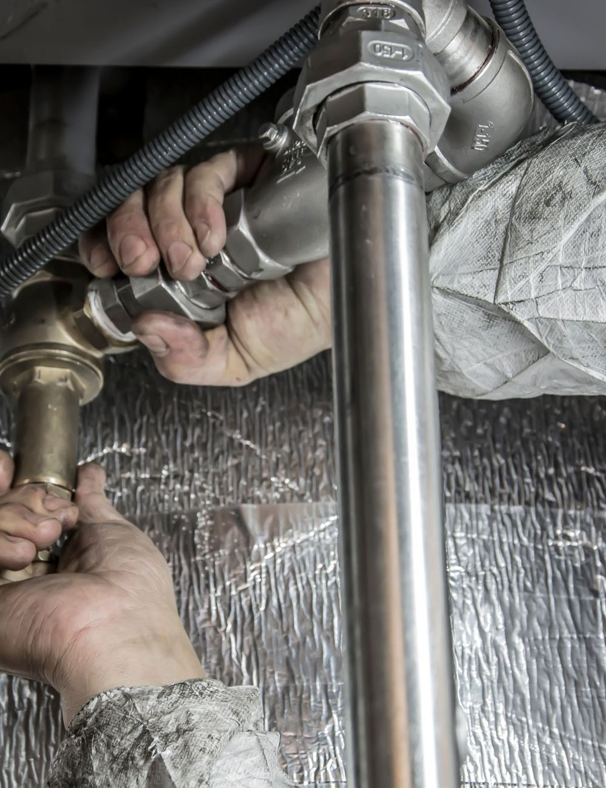
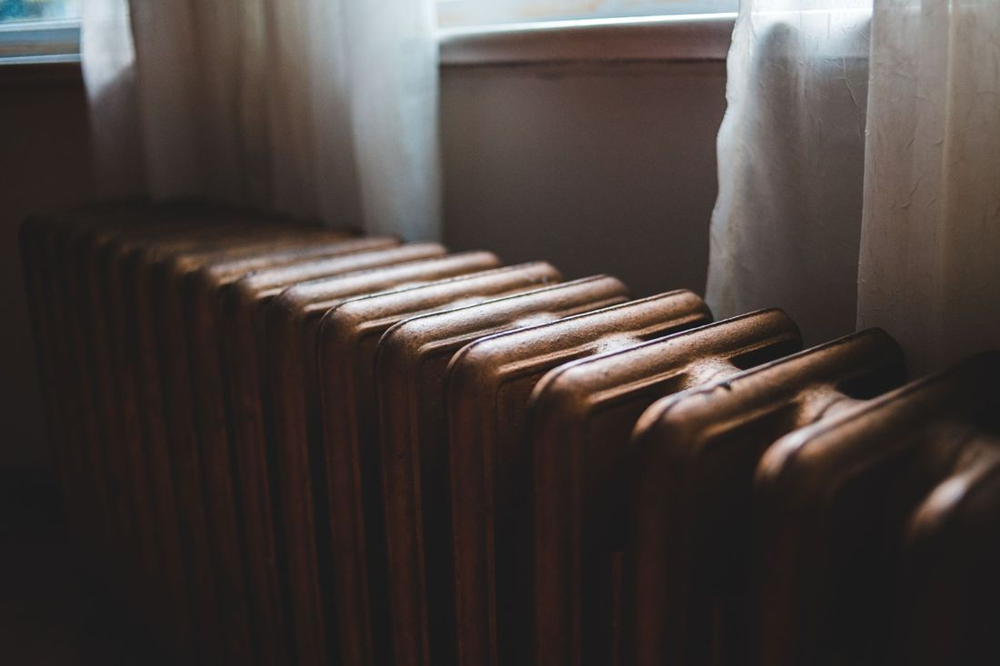
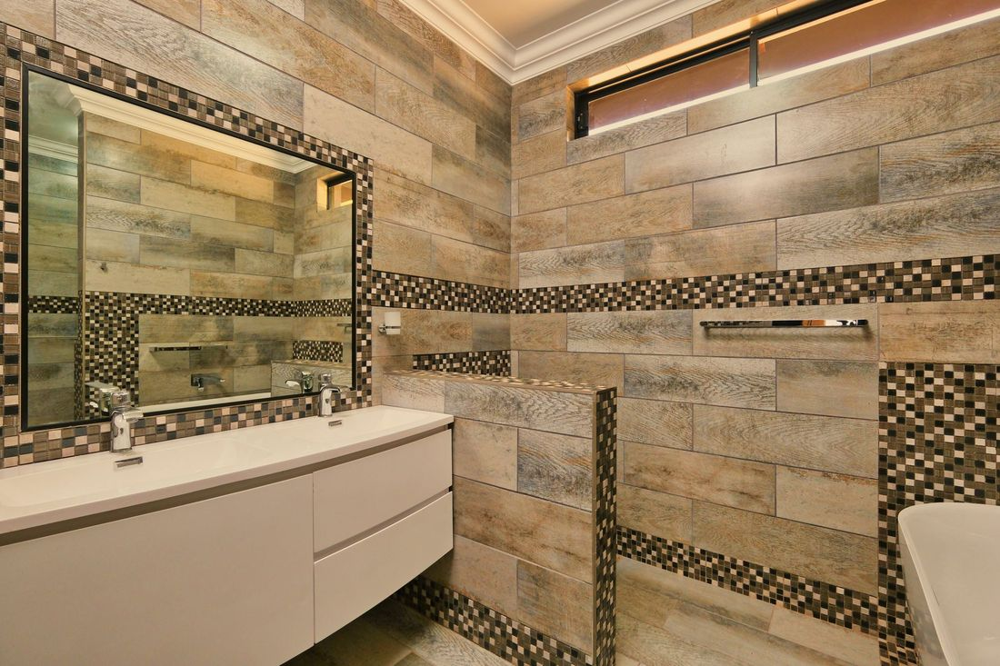
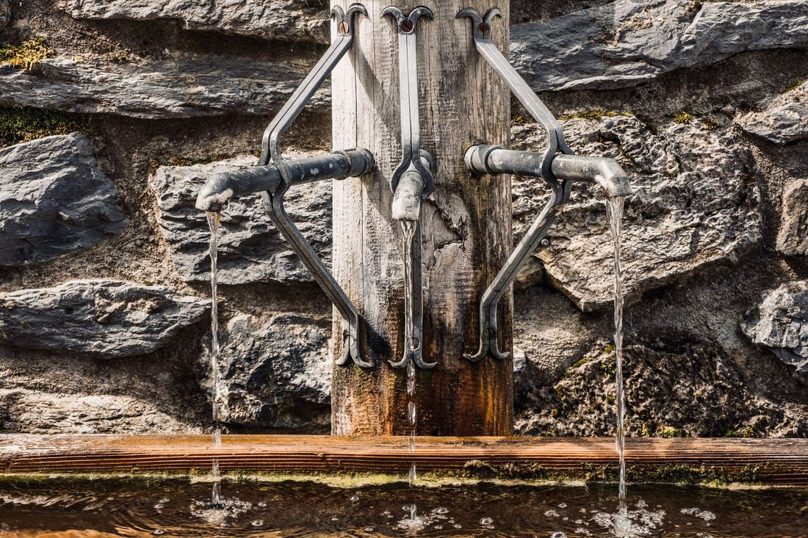

Pendik su tesisatı ve kaçak tespiti
Duvarda leke, faturada artış, gider tıkalı mı? Sorunu cihazla bulur, gereksiz kırmadan çözmeye çalışırız. Arızayı yazın, ustamız dönüş yapsın.

Su kaçağından kanal açmaya, tek ustadan
Arızayı bulmak, doğru yerde ve doğru yöntemle çözmek istiyoruz.
 01
01Cihazla su kaçağı tespiti
Duvar ve zemin kırılmadan önce termal kamera ve akustik dinleme gibi cihazlarla kaçağın yeri belirlenir. Böylece yalnız gereken noktaya müdahale edilir.
- Kırmadan önce yer tespiti
- Duvara değil, kaçağa müdahale
 02
02Tıkanıklık ve kanal açma
Lavabo, gider ve ana hat tıkanıklıkları spiral ya da robotik kanal açma makinesiyle açılır. Hattın içi gerekirse kamerayla incelenir.
- Spiral ve robotik kanal açma
- Gerekirse kamerayla hat kontrolü

03Petek ve kalorifer tesisatı
Isınmayan ya da sızdıran petek, hava alan hat ve vana sorunları kontrol edilir. Petek sökme-takma ve boru bağlantı işleri yapılır.
- Petek söküm, takım, hava alma
- Boru ve vana bağlantıları

04Banyo ve mutfak tesisat yenileme
Eskiyen boruların yenilenmesi, banyo ve mutfak su-gider hatlarının yeniden çekilmesi. Fayans ve seramik öncesi tesisat hazırlığı da yapılır.
- Su ve gider hattı yenileme
- Fayans öncesi tesisat hazırlığı

Musluk, batarya ve rezervuar değişimi
Damlatan musluk, sızdıran batarya, sürekli akan ya da dolmayan rezervuar için conta, şamandıra ya da komple değişim yapılır.

Sıhhi tesisat arıza
Klozet, lavabo, duş teknesi ve evye bağlantılarındaki sızıntı, gevşeme ve su basıncı sorunları yerinde giderilir.

Kombi su bağlantısı
Kombinin su giriş, çıkış ve kalorifer hattı bağlantıları yapılır. Doğalgaz tarafı gerektiren işler yetkili kişilere bırakılır.
Belirtiyi seçin, olası sebebi ve ilk adımı görün
Tesisat sorunlarında ilk dakikalar önemli. Önce güvenle kendiniz bakabileceğiniz şeyleri, sonra ustamızın ne yapacağını anlatıyoruz.
1Sorun türü
2Belirti
206 Google yorumu
Google'daki yorumlarınız sitede canlı yer alır; memnun müşteriniz tek dokunuşla yeni yorum bırakır.
Evinizde gizli su kaçağı var mı? 2 dakikada test edin
Duvarda leke görünmese bile fatura yükselişi gizli kaçağın işareti olabilir. Su sayacınız üzerinden yapabileceğiniz basit bir test, ustaya gerek olup olmadığına dair fikir verir.
Formu doldurun, ustamız sizi arasın
Form, WhatsApp mesajı olarak hazırlanır ve tek dokunuşla Süleyman Usta'ya gider.
Çalışma saatleri
| Pazartesi | 09:00 – 17:00 |
| Salı | 09:00 – 17:00 |
| Çarşamba | 09:00 – 17:00 |
| Perşembe | 09:00 – 17:00 |
| Cuma | 09:00 – 17:00 |
| Cumartesi | 24 saat açık |
| Pazar | Kapalı |
Yenişehir, Kurtköy, mahallesi, 34912 Pendik/İstanbul
Pendik ve çevresi
Mahallenizi yazın, bölgemizde mi hemen görün.
Sık sorulanlar
Pendik'te su kaçağını duvarı kırmadan bulabilir misiniz?
Çoğu durumda evet. Termal kamera, nem ölçer ve akustik dinleme cihazlarıyla kaçağın yeri belirlenir; böylece yalnız o noktaya müdahale edilir. Kesin yöntem yerinde bakıldıktan sonra söylenir.
Süleyman Usta hangi saatlerde açık?
Paz–Cum 09–17 · Cum 24 saat açık · Paz Kapalı. WhatsApp'tan her zaman yazabilirsiniz; mesai içinde dönüş yapılır.
Su kaçağı olduğunu nasıl anlarım?
Duvar ve tavanda leke, boya kabarması, rutubet kokusu, ani fatura artışı ve su kullanılmadığı hâlde dönen sayaç belirtilerdir. Sayfadaki kaçak testi ilk kontrolü yapmanıza yardımcı olur.
Tıkalı gideri nasıl açıyorsunuz?
Tıkanıklığın yerine göre spiral ya da robotik kanal açma makinesi kullanılır. Gerekirse hattın içi kamerayla incelenir. Kimyasal asit önerilmez; boruya zarar verebilir.
Fiyatı önceden öğrenebilir miyim?
Arızayı görmeden kesin fiyat söylemek doğru olmaz. Yerinde tespitten sonra yapılacak iş ve ücret açıkça söylenir, onayınızla işe başlanır. Fotoğraf ya da video gönderirseniz kabaca yön verebiliriz.
Pendik'in hangi mahallelerine geliyorsunuz?
Pendik ve çevresinde adrese gidilir. Mahallenizi yazarsanız, gelinip gelinemeyeceğini söyleriz.
Petek ve kalorifer sorunlarına bakıyor musunuz?
Evet. Isınmayan petek, hava alan hat, vana ve bağlantı sızıntıları, petek sökme-takma işleri yapılır. Kombinin gaz tarafı gerektiren işleri için yetkili kişi gerekir.
Su kaçağında ilk ne yapmalıyım?
Önce ana su vanasını kapatın, elektrikli cihazlardan ve prizlerden uzak durun. Islak alanın fotoğrafını çekin ve ustamıza yazın. Bu, zararın büyümesini önler.
Pendik su tesisatçısı: neden Süleyman Usta?
Pendik'te su tesisatçısı ararken çoğu kişi hem hızlı dönüş hem de gereksiz kırma-dökmeden kaçınmak ister. Süleyman Usta; su kaçağı tespiti, tıkanıklık ve kanal açma, petek ve kalorifer tesisatı, banyo-mutfak tesisat yenileme ile musluk, batarya ve rezervuar değişimi işlerini Pendik ve çevresinde yapar. Kaçak arıyorsanız önce cihazla yer belirlenir; böylece duvar ve zemin gereksiz yere kırılmaz.
Tıkalı gider, yavaş akan lavabo, rögar ve gider kokusu gibi sorunlarda spiral ya da robotik kanal açma makinesi kullanılır. Yenileme işlerinde fayans ve seramik öncesi su-gider hatları düzenlenir. Sorununuzu yazın, ustamız önce ne olduğunu anlatsın, sonra onayınızla işe başlansın.